The following are my top 5 travel destinations that I enjoyed travelling to and I
would recommend one to try them out.
Amsterdam Netherlands
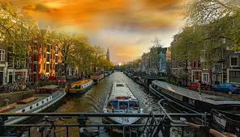
Beautiful sunset view along a river with a several boat flowing in the
middle of the city
Amsterdam city view banner boldly printed with artistic word reflectin
Amsterdam, this gives an impresssion of the creativity the local have.
Clinch hotel in Amsterdam that has a beatiful surrounding of
colourfull flowers giving a relaxing atmosphere for tourist
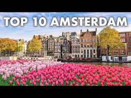
Another hostel in Amsterdam that has a colorfull environment of
flowers giving a beatifull view of the place
smiling river in the middle of the town providing a chilling
environment.
Why I Would Visit Amsterdam
Amsterdam is one of those places that instantly makes
you feel like you've stepped into a storybook. The charm of its canals,
the crooked houses leaning over the water, and the cozy cafés tucked
into quiet corners create a warmth that’s hard to describe. Whether
you're wandering through world-class museums, riding a bike like a
local, or just enjoying a fresh stroopwafel by the canal, there's a
simple joy in the way life moves here. It’s a city that invites you to
slow down, explore, and soak in its mix of culture, history, and
laid-back vibes. If you’re looking for a place that feels both exciting
and comforting, Amsterdam might just be it.
Fun Activities In Amsterdam
Bike riding
Experience vibrant nightlife and diverse cuisine
Visit iconic sites like Anne Frank’s House
Discover world-famous museums like the Van Gogh
Museum
Los Angeles Califonia
A view of the Griffith Observatory, with downtown LA in the background
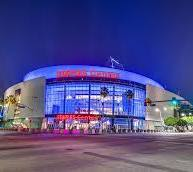
Cryptoarena stadium famous for being the home ground for the great
Lakers team as it has hosted key events and been used by the legends
of the game including James, Kobe, Shark e.t.c
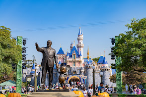
Popular disney land Cartoons displayed inthe middle of the city
Hollywood getty way banner viev that is popular world wide for being
featured in almost every single movie by Hollywood
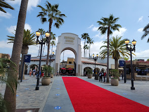
Hollywood studio in Los Angelos popular word wide for great
entertainment movies and programms. The building is builed at the
center of the town
Why I would Visit
Los Angeles is a city where dreams meet sunshine, offering a perfect mix
of entertainment, culture, and natural beauty. From strolling down
Hollywood Boulevard to relaxing on the beaches of Santa Monica, there’s
something for everyone. Visitors can explore world-famous attractions
like Universal Studios, the Getty Center, and Rodeo Drive, or simply
enjoy the city's diverse food and vibrant arts scene. Whether you're
chasing stars or sunsets, LA delivers an unforgettable experience.
Fun Activities
Explore the Santa Monica Pier with games, rides, and
beachside fun.
Stroll down Venice Beach Boardwalk for quirky shops,
street performers, and skate parks.
Tour celebrity homes or spot stars on the Hollywood
Walk of Fame.
Check out Griffith Observatory for stargazing and
panoramic views.
Catch a Lakers game or concert at the Crypto.com
Arena.
Bangkok, Thailand’s
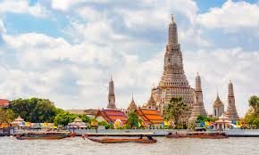
An airbnb In bangkok
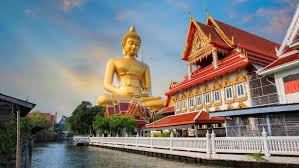
Bangkok Airport
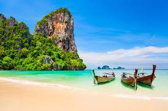
Beautiful beach in Bangkok with boats anchourd at the shore
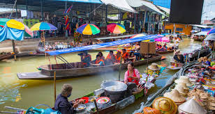
River in middle of a city in Bangkok
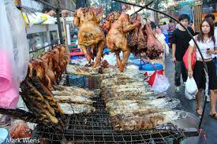
Street food in Bangkok
Why visit Bangkok
Bangkok is a vibrant city where ancient culture and modern energy blend
seamlessly. Visitors are drawn to its stunning temples like Wat Arun and
Wat Phra Kaew, bustling street markets, and world-famous Thai cuisine.
Whether you're taking a long-tail boat along the Chao Phraya River,
exploring the Grand Palace, or shopping in mega malls and night bazaars,
the city offers something for every traveler. With its warm hospitality,
lively nightlife, and endless adventures, Bangkok is a destination that
excites the senses and leaves a lasting impression
Fun Activities
Explore the Grand Palace and Wat Phra Kaew, home to
the Emerald Buddha.
Visit floating markets like Damnoen Saduak or Amphawa
for food and souvenirs.
Shop at Chatuchak Weekend Market, one of the largest
markets in the world.
Enjoy a Thai cooking class and learn to make
authentic dishes.
Paris
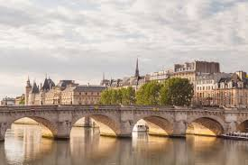
Historic Pont Neuf bridge over the Seine River
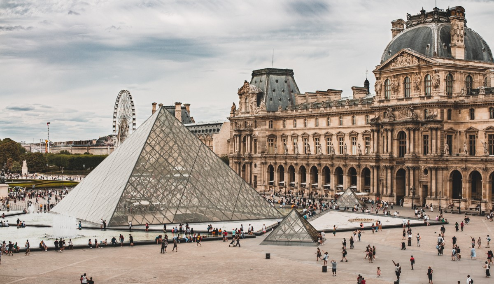
The iconic Louvre Museum with its glass pyramid
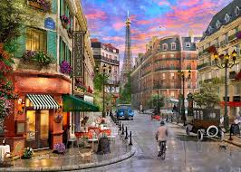
The Eiffel Tower standing tall at sunset
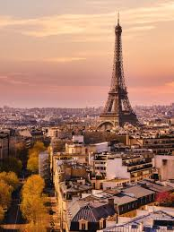
Eiffel Tower picture taken in midday
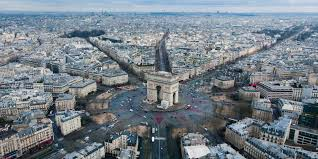
Paris city Aerial view
Why Visit Paris
Paris, often called the “City of Light,” is a dream destination for
many, and for good reason. It offers a magical mix of history, art,
fashion, and romance. From admiring world-famous landmarks like the
Eiffel Tower and Notre-Dame to exploring masterpieces at the Louvre and
Musée d'Orsay, the city is a cultural treasure trove. Its charming
streets, cozy cafés, and delicious pastries invite you to slow down and
soak in the atmosphere. Whether you're drawn by the architecture, the
cuisine, or the romance in the air, Paris leaves every visitor
enchanted.
Fun Activities
Climb the Eiffel Tower for breathtaking views of the
city.
Cruise along the Seine River on a scenic boat ride,
especially at sunset.
Explore the Louvre Museum and see the Mona Lisa up
close.
Wander through Montmartre and visit the Sacré-Cœur
Basilica.
Masai Mara
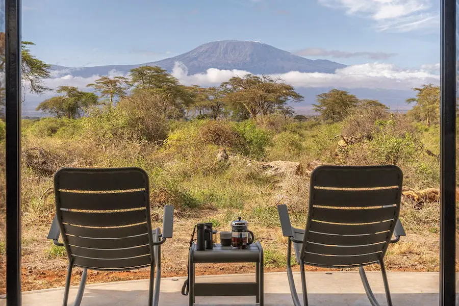
Angama Amboseli view of Mout Kenya
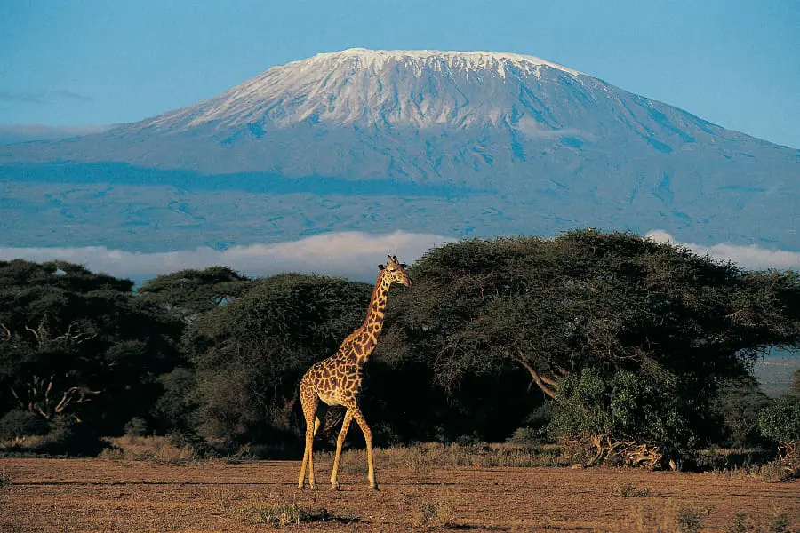
Giraff image with vissible view of a mountain
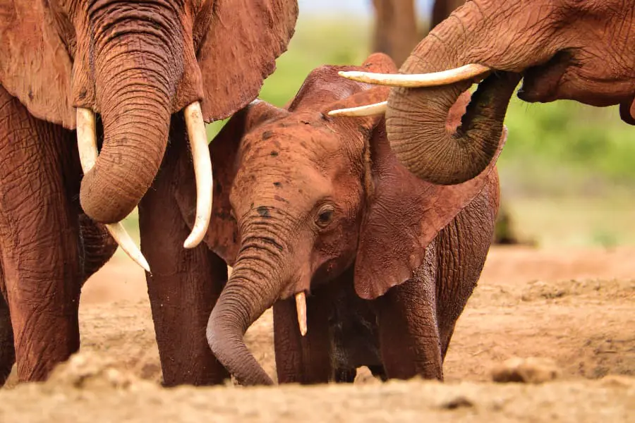
Elephants in Amboseli National park
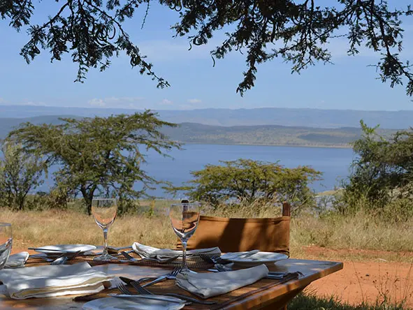
Mbwena Safari Camp
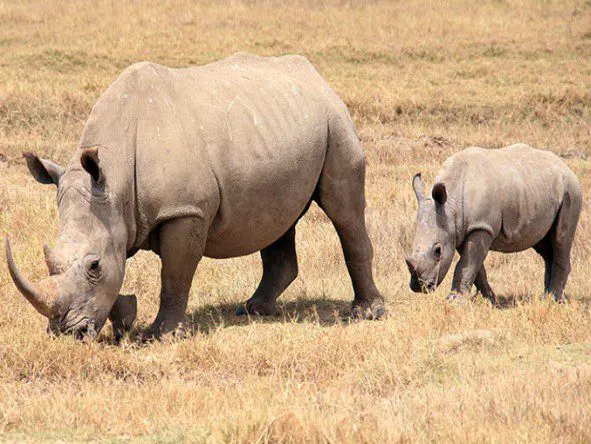
Rhino photo captured Masai Mara
Why Visit Masai Mara
Visiting the Maasai Mara offers a once-in-a-lifetime experience where
nature, wildlife, and culture come together in breathtaking harmony.
It’s one of Africa’s most iconic safari destinations, known for the
Great Wildebeest Migration, where millions of animals thunder across the
plains. The reserve is home to the Big Five—lion, elephant, buffalo,
leopard, and rhino—as well as countless other species. Beyond the
wildlife, you can immerse yourself in Maasai culture, witness stunning
African sunsets, and enjoy luxurious game lodges or tented camps in the
heart of the wilderness. For adventure, beauty, and raw nature, the
Maasai Mara is unmatched.
Fun Activities
Go on a game drive to spot the Big Five and witness
the incredible wildlife up close.
Experience the Great Migration(July–October), one of
the world’s most spectacular natural events.
Take a hot air balloon safari at sunrise for stunning
aerial views of the savannah.
Visit a Maasai village to learn about traditional
customs, dress, and lifestyle.
Enjoy a guided nature walk with a Maasai warrior to
discover animal tracks, plants, and local lore.